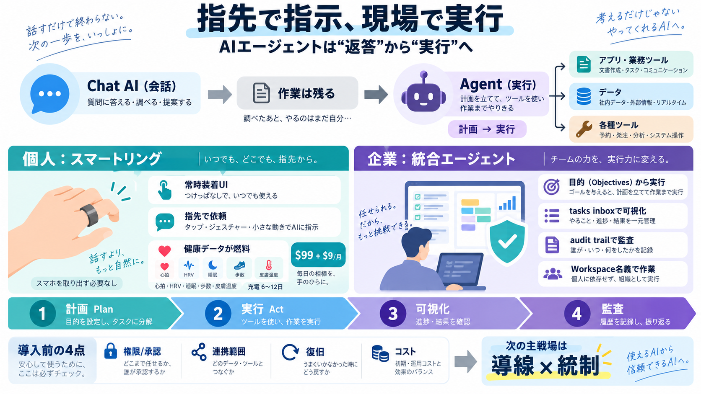

Natura Interface Smart Ring Brings AI Agents to Your Finger for $99 // Tech Beat
The ring tracks heart rate, resting heart rate, heart rate variability, sleep stages, movement, steps and skin temperatu…

会話型AIが“返答”から“実行”へ移る中、個人は常時装着の導線（リング）から、企業は監査可能な統合基盤（Geminiエージェント）から進化が見えます。
チャットAIは答えを返すだけで終わりがちで、予約・共有・作業などは別途手続きが必要になります。AIエージェントはこのギャップを埋めるために、計画してツールを呼び出します。
返答中心
答えは出るが、作業は残る
計画→実行中心
ツール/アプリ/データに接続
スマートリングが“常時装着UI”になると、電話やPCの画面に触れずにタスクへアクセスできます。健康計測（睡眠・心拍など）も同居して、毎日使える価値に変えます。
外さない前提
入浴・睡眠中も継続
触らない導線
起動→依頼が短い
計測→行動提案
記録から自動化へ
企業では便利さだけでなく、誰が何をしたかを追えることが導入障壁を下げます。Geminiは目的（objectives）から実行し、実行過程を可視化し、エージェント名義で監査ログを残す設計です。
tasks inbox
実行プロセスを整理
audit trail
エージェント名義の記録
Naturaの新スマートリング Interface（99ドル）は、AIエージェントを常時アクセス可能なインターフェースにする構想です。音声だけでなく、ヘッドフォン接続やiPhoneのLive Activity、専用アプリ等で結果を返す想定があります。
指先で依頼
電話/PCを触らない
Live Activity/アプリ
複数チャネル
複数AIを用途別に
例：Claude/ChatGPT等
Interfaceは心拍、安静時心拍、HRV、睡眠段階、日中の動き、歩数、皮膚温度を計測します。バッテリーは満充電で6〜12日、満充電まで100分です。
心拍 / 安静時心拍
HRV（変動）も計測
睡眠段階
休息の構成を把握
歩数 / 皮膚温度 / 動き
日中の変化を追跡
6〜12日 / 100分（満充電）
初期価格は99ドルで、その後値上げ計画。さらに月額9ドルのサブスクへ移行する方針が示され、最初は3〜6か月無料の条件があります。
Interface：$99
その後値上げ予定
月額：$9 / 月
3〜6か月無料（初期）
端末普及を優先しつつ、AI利用を継続課金に
Geminiは、目的（objectives）を与えると計画して作業し、社内システムや外部ツールへ接続して実行します。エージェント専用のWorkspaceアカウントで共同作業者のように振る舞います。
Objectives（目的）
人の意図を定義
計画→作業
ツール/接続先へ
Workspace（専用）
“名義”を持つ
リング側も企業側も“実行”が要点です。特に企業側は、エージェントが実行過程をtasks inboxで整理し、audit trailで追跡可能にします。
目的→計画を作る
やる順序を決める
ツールへ接続して作業
データ/アプリを使う
tasks inbox
途中経過を俯瞰
audit trail
追跡と統制を支援
個人向けは“常時装着×指先UI”が主役になり、企業向けは“監査可能な接続”が主役になります。どちらも実行へ寄せますが、重視する条件が対照的です。
導線の短縮（起動の手間↓）
健康計測と統合して利用頻度を上げる
統制の容易さ（監査/ログ）
セキュリティ・スケール・コスト問題を前提化
リングは、AIエージェントを“性能”よりも“日常導線”として成立させようとしています。会話よりも行動完了へ距離を短くすることが差別化の核です。
行動完了に近い
起動が軽いほど実行率が上がる
誤実行の影響が大きい
承認/取消の設計が鍵
健康データ×AI連携が論点
個人でも統制が必要
監査可能性（audit trail）は大きな利点です。一方で、マルチモデルや接続先の増加により、現場の運用複雑さやコスト制御が増える可能性があります。
エージェント名義のログ
誤操作・不正利用の追跡を支援
コスト/運用の複雑化
接続先・承認・失敗時対応が課題
連携範囲、権限/承認フロー、誤作動時の復旧手段、課金で何が変わるか
技術の先行よりも、実運用での“安全・範囲・復旧・コスト”を押さえると期待値ズレが減ります。特に実行エージェントは、誤実行時の安全策が成否を分けます。
誰が何を許可するか
段階的な安全策（承認・取消）
対応アプリ/地域/機能
“どこまで自動化”かを確認
失敗時のフォールバック
代替手段・手戻り手順
サブスクの中身・上限
長期総コストを見積もる
AIエージェントは“会話”から“実行”へ進みます。個人はスマートリングの常時UIで距離を縮め、企業はGeminiの統合基盤で監査と安全を整える——その対比が、次の勝ち筋を示しています。
The ring tracks heart rate, resting heart rate, heart rate variability, sleep stages, movement, steps and skin temperatu…
The device is planned to support services including Claude, ChatGPT, Grok Bot, Meta's Muse and other AI applications. …
The company says the ring can last 6 to 12 days on a full charge, depending on usage, and takes 100 minutes to fully rec…
Battery life runs 6 to 12 days depending on use, and takes 100 minutes to fully recharge. Pre-orders open next month, wi…
Global smart ring shipments grew nearly 80% year-over-year in 2025, driven by demand for compact wearables with advanced…